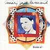

Celtic Lyrics Corner > Artists & Groups > Mary Jane Lamond > Suas E! > É Horò
|  | É Horò |
| Credits : | Traditional |
| Appears On : | Suas E! |
| Language : | Gàidhlig (Scottish Gaelic) |
| Lyrics : | English Translation : |
| Nuair a sheasas mi 's an dorust | When I stand in the doorway |
| Chì mi 'choille bhos mo chinn | I see the forest above my head |
| Sìnidh mo shùilean air sileadh | My eyes begin to weep |
| Tha mo mhisneachd air a claoidh | My courage is overwhelmed |
| Sèist : | Chorus (after each verse) : |
| É ho rò 's 'na bheil air m'aire | É ho rò the subject of my thoughts |
| 'S mór an nochd a tha mi 'caoidh | Great tonight is my mourning |
| Ill ù ill ò gur mór mo luaidh ort | Ill ù ill ò I love you deeply |
| Ged nach d'fhuair mi thu dhomh fhìn | Although I didn't win you for myself |
| 'Sann agam fhìn a bha na bràithrean | I had three brothers |
| Bi mi 'ga àireamh a chaoidh | Who I will forever recount |
| 'S truagh nach robh mi aig a' charraig | It's a pity that I wasn't at the quay |
| Nuair a dh'éibh iad soraidh leibh | When they bid us farewell |
| Nuair a ràna' sinn 'n "Table" | When we arrived at the Table |
| Mo chuideachd gu léir ann cruinn | My entire family was there |
| Mo phiuthar 's mo bhràthair-céile | My sister and brother-in-law |
| 'S gun stiall eudaich air an druim | Without a strip of clothing on their backs |
| Seiche na bà air a cairteadh | A scraped cow's hide |
| 'S air a càradh air mo dhruim | Fixed on my back |
| Mi air stàbhradh leis an acaras | And I was starving with the hue |
| Col'as a' bhàis a' tighinn air m'aghaidh | Of death coming over my face |
| Nam biodh agam cliabh 's corran | If I had a creel and a sickle |
| Feamain iseal 's m'eathar fhìn | The low seaweed and my own boat |
| Cha bhiodh mo chlann air a' bhrochan | My children wouldn't be eating gruel |
| 'S an tìr mhosach 'gamo chlaoidh | And I wouldn't be oppressed by this miserable land |